Paris · Vitry-sur-Seine
Tous les lundis · 19h30
Le rugby, sans contact.
Un sport mixte, ouvert à tous les niveaux et tous les âges. Viens essayer gratuitement avec le Paris Tag Rugby Club.
✓ Mixte✓ Tous niveaux✓ Tous âges✓ Tous les lundis
Un sport mixte, ouvert à tous les niveaux et tous les âges. Viens essayer gratuitement avec le Paris Tag Rugby Club.
Deux séances pour découvrir le sport et le club avant de t’engager.
Rejoins-nous un lundi soir, même si tu n’as jamais joué.
Tu testes le Tag Rugby et l’ambiance du club, sans engagement.
Pas besoin d’avoir joué au rugby avant. Tu arrives, on t’explique, tu joues.
On défend en retirant un tag à la ceinture. Le jeu reste rapide et collectif.
Femmes et hommes jouent ensemble, avec des profils et des âges très variés.
Débutant ou confirmé : chacun trouve sa place et progresse à son rythme.
Stade Gabriel Péri · 94 rue Gabriel Péri, Vitry-sur-Seine
Tu peux simplement venir découvrir le Tag Rugby : on t’accueille et on t’explique tout sur place.
Entraînements, tournois et moments partagés : fais défiler les photos pour découvrir l’esprit du club.
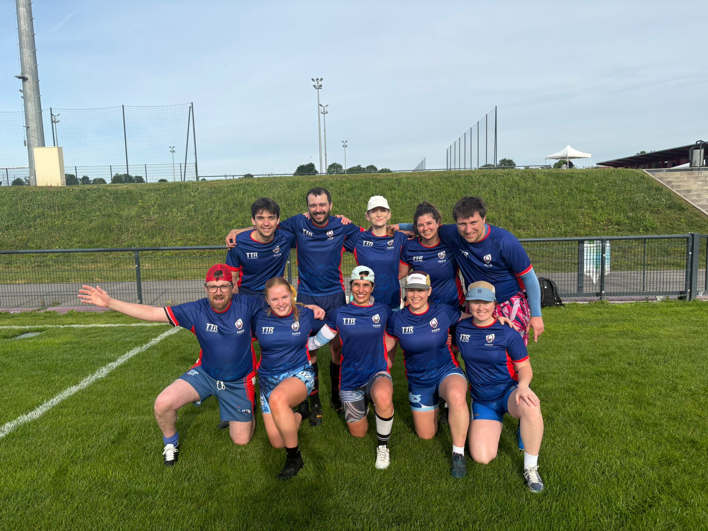
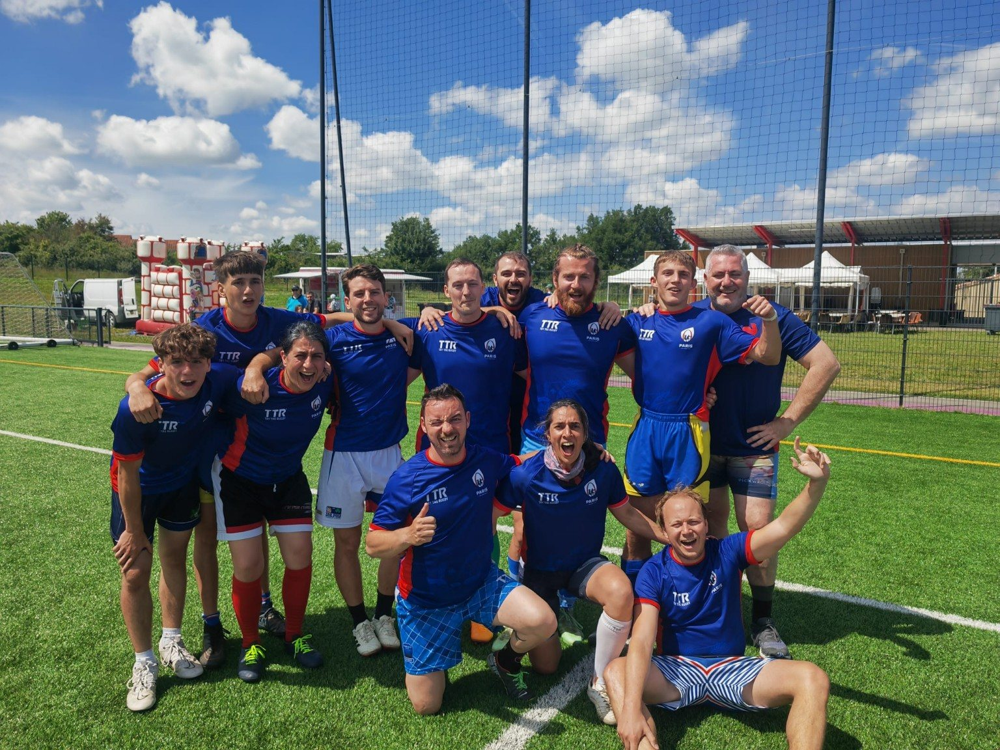
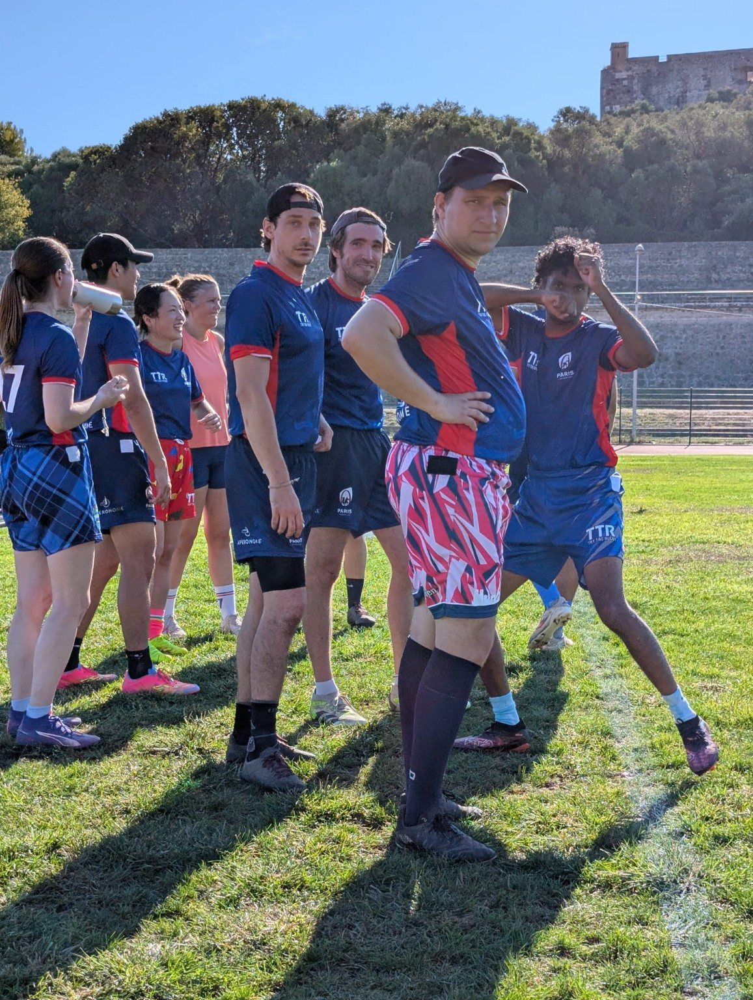
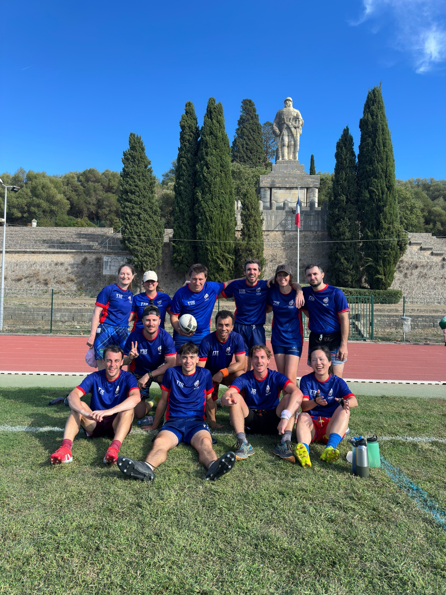
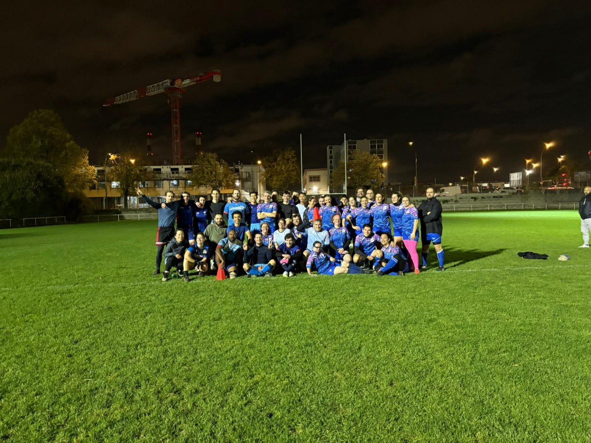
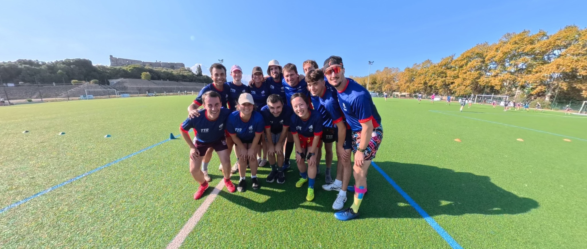
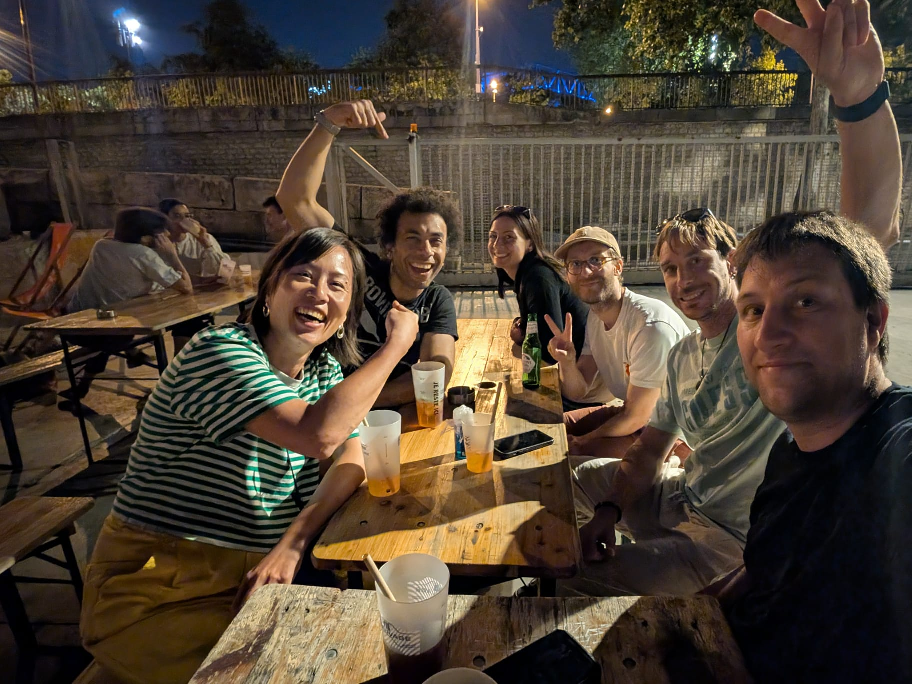
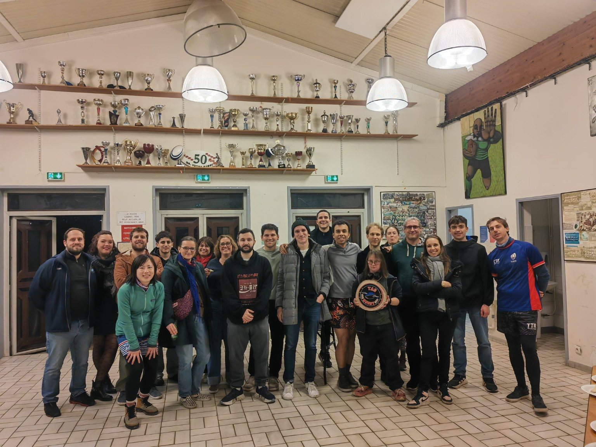
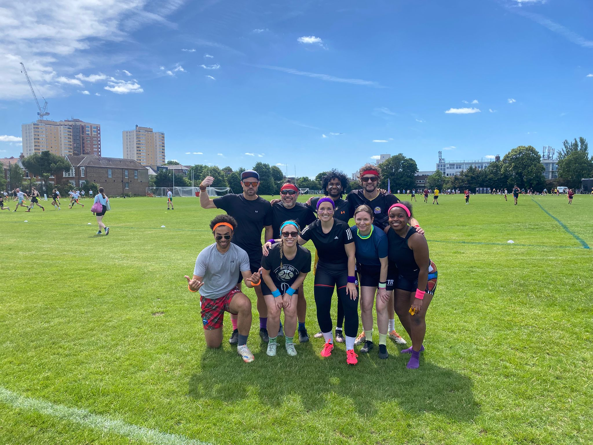
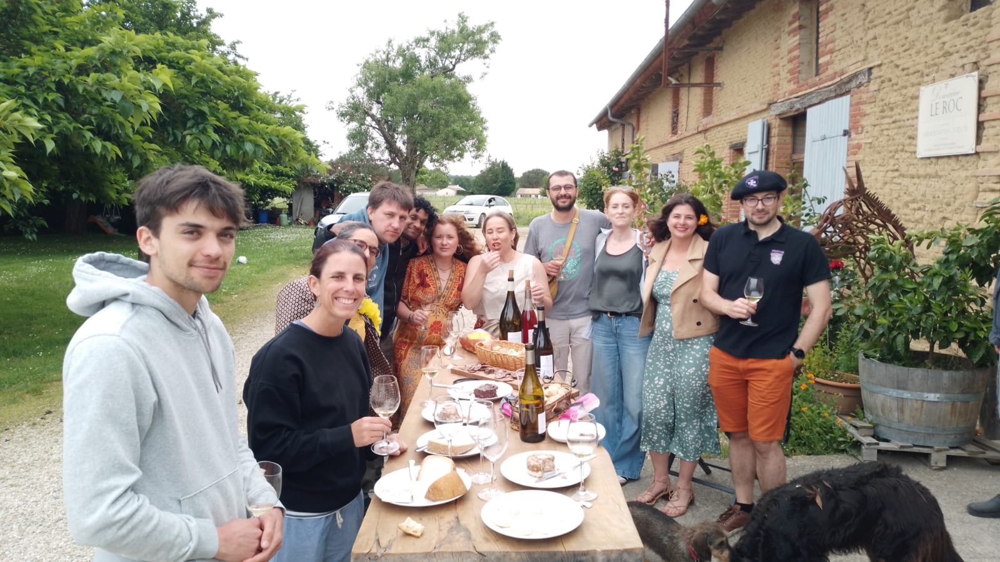
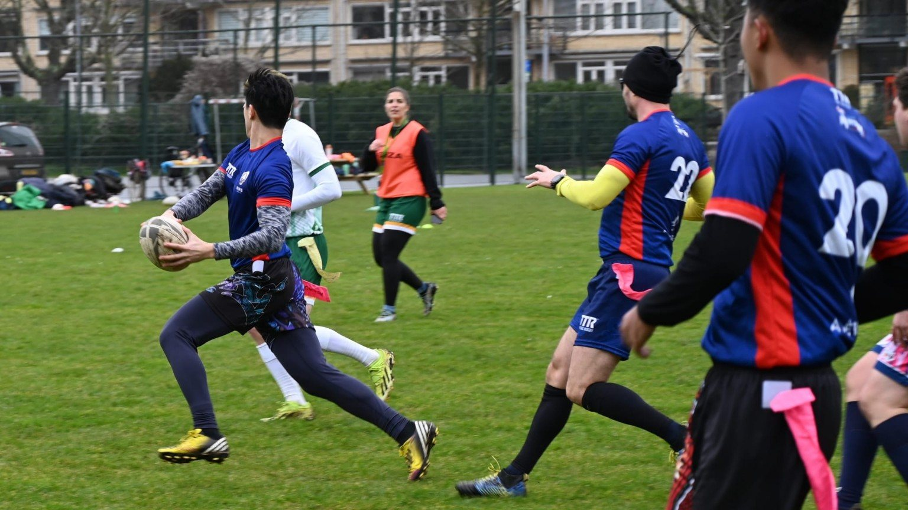
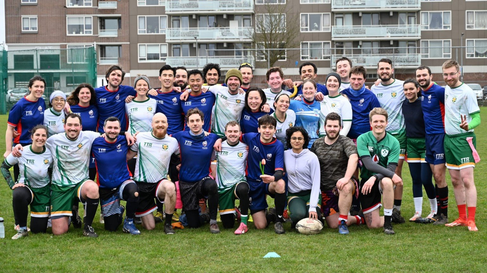
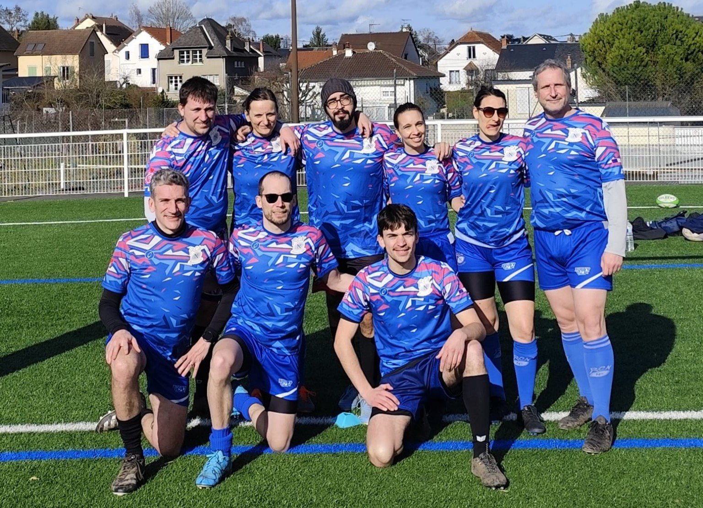
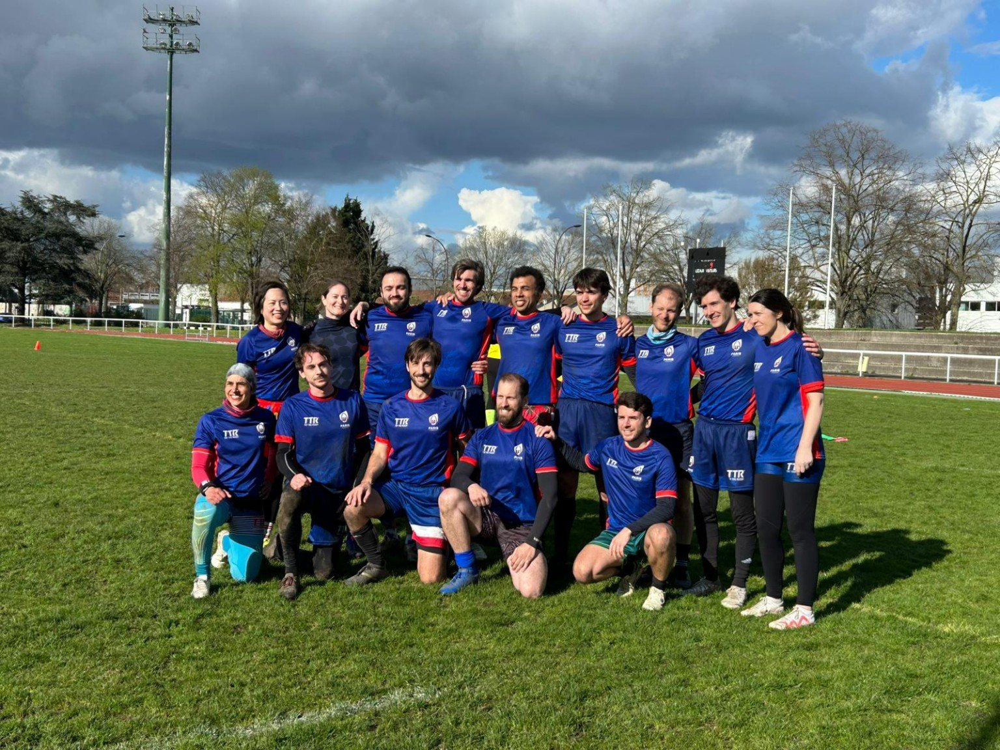
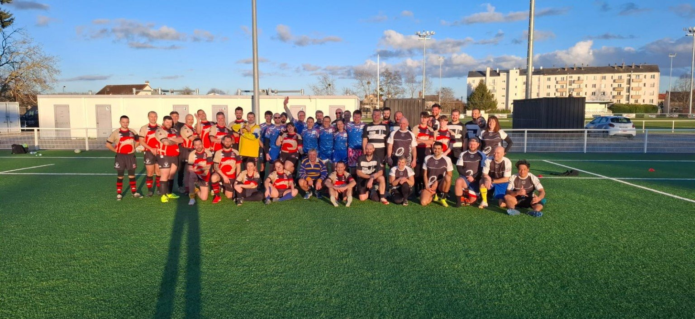
Deux séances gratuites, sans engagement.